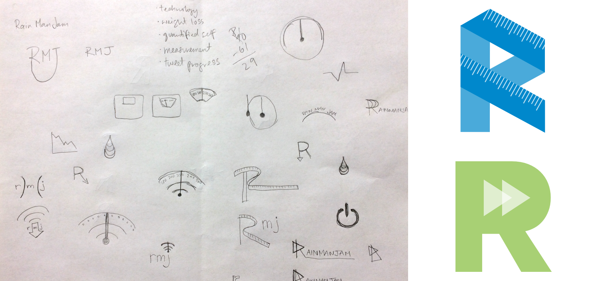
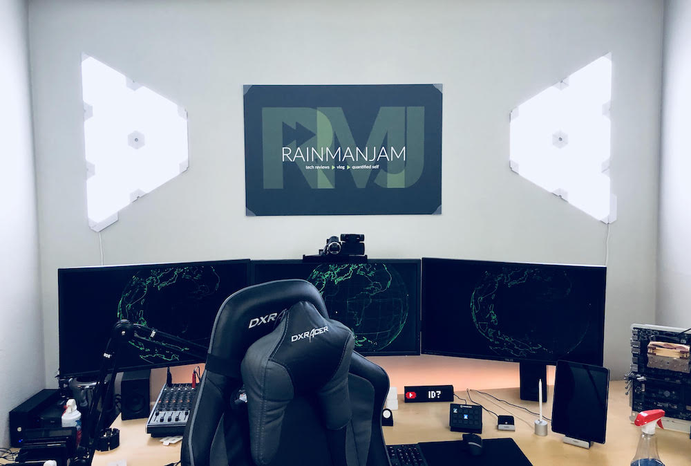

Rainmanjam Identity, 2018
Skills
- Identity design
Tools
- Sketch
Artifacts
- Logos
- YouTube and social media graphics
Problem
The client (Shannon Atkinson, AKA Rainmanjam) needed a new identity for his YouTube channel and associated social media profiles after pivoting the focus of his content from gaming to weight loss and fitness product insights. This identity needed to continue the Rainmanjam brand, but be general enough to use for more general tech reviews.

Solution
I started sketching logo ideas around the concepts of technology, fitness, and “quantified self” - part of the Rainmanjam project involved an internet-connected scale that tweets his weight loss progress. After a round of iterations, I learned that Shannon preferred an image that would allow him to expand beyond fitness as a topic, which helped me refine the visual language.
Once he was happy with the direction of the design elements (I specifically isolated various elements of each option - color palette, font, etc. - for feedback), I searched out best practices for optimizing graphics for Twitter, YouTube, and Facebook. I tested the images I created on a variety of breakpoints before exporting final versions for Shannon to upload to his own social media channels.

Result
The new logo and identity is flexible enough to represent any new direction Shannon takes within the technology and entertainment space, and can be used across platforms, as well as in print.
